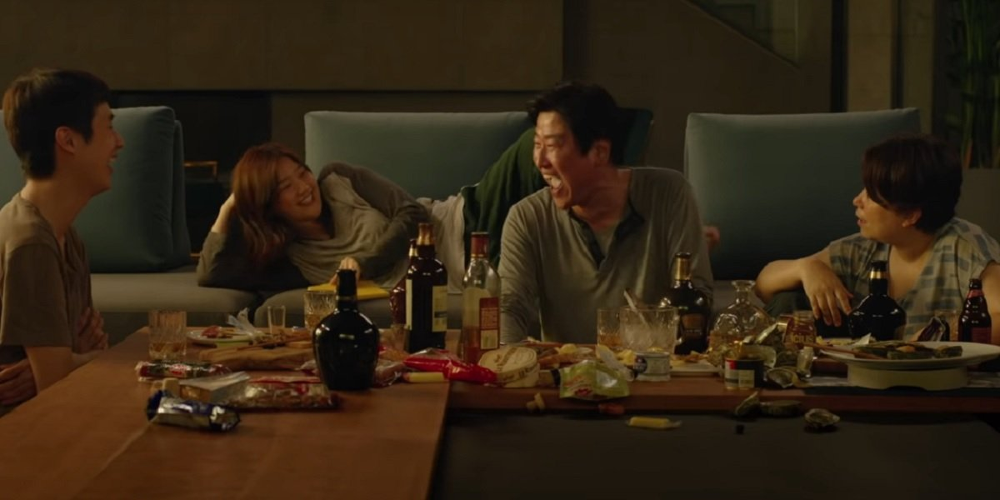

Parasitism
The obvious representation of parasites in the movie is the poor Kim family who is living of the wealth and naivety of the Park family. Because they are not happy with the state of their own lives and are too lazy to make a change for the better, the Kim family tries to put as little work as possible and lie their way to wealth and financial stability. On the other hand, the Park family can also be seen as parasites, because "in a capitalistic society, the rich do nothing while the members of the lower class have to do all the dirty work." (Soc. impl). The Park family are unable to do any labor themselves. For example, the Park family doesn't drive, or cook, or clean, or do any chores that are normal for most of families around the world. This lazy and spoiled characteristic makes them a parasite who leeches off the poor family's labor. Finally, one can say that another parasite in the movie is class inequality itself. Regarding the park family, the search and need for wealth are essential and it is seen as a competiion where one cannot get enough of it. This parasite is also shared with the poor family, who have the same aspirations to acquire power and will do anything in their way to obtain it.